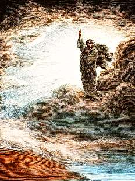

Борис Акунин
Мой календарь
Это не я придумал - так постановила Организация Объединенных Наций: что сегодня отмечается «Всемирный день креативности и инноваций».
Какого числа Господь Бог создал мир, достоверно неизвестно. Вероучители веками спорили, произошло это 1 марта, 1 сентября или в какой-то иной день. А по-моему, лучше всего подходит День Креативности. Ведь что такое творчество? Это когда сначала ничего нет и только тьма над бездной, а потом появляется творец, говорит: «Да будет свет», и бысть свет. Возникает мир, в котором можно и интересно жить. Все творцы, в какой бы сфере искусства они ни работали, подражают главному Творцу.
У вас сегодня выбор между двумя опциями.
Если вы ощущаете в себе творческую жилку, напишите стихотворение или нарисуйте что-нибудь, или сочините песню. Притом не забывайте, что еще есть «актуальное искусство». Это когда вы рисовать не умеете, нот и алфавита не знаете, но способны поразить публику какой-нибудь художественной акцией. Желательно поразить приятно, но многие актуальные художники предпочитают шокировать и эпатировать.
Если же креативность вам не присуща, переключитесь на второй компонент - инновацию. Сделайте что-нибудь новое, хотя бы лично для вас. То, чего вы никогда раньше не делали. И ООН вас одобрит.